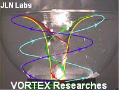
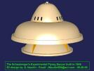
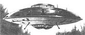

The Vortex Technologies
By Jean-Louis Naudin
created on September 26th, 1999 - JLN Labs - Last update March 10, 2006
Toutes les informations et schémas sont publiés gratuitement ( freeware ) et sont destinés à un usage personnel et non commercial
All informations and diagrams are published freely (freeware) and are intended for a private use and a non commercial use.
The GFS UAV, a Coanda effect flying
saucer 

 The
"Repulsin" type B , uses the "implosion effect" in
vortex..
The
"Repulsin" type B , uses the "implosion effect" in
vortex..
 The Viktor
schauberger's inventions
The Viktor
schauberger's inventions
The Schauberger's technology fully explained and its applications...

Another
Schriever-Miethe-Ballenzo's saucer patent
"The Cycloid-Space-Curve-Motion Cycle of Atomic Transitions - as discovered by the Austrian Physicist Viktor Schauberger" by Paul E. Potter
THE VORTEX by Paul E. Potter The centrifugal effect in a vortex throws heavy liquid/air out to the perimeter whilst lighter air/ liquid is pushed to the center. Electrically, the air polarized with negative ions or as electrons will be pushed to the center and down, the air with positive ion content will move upward and outward. With mass weights for an electron at 9.109x10-31 kg. and a positive ion of air at around 2.656x10-26 kg it can be seen that the negative electron can be only one thirty-thousandth of the positive ion, and of course much more agile. ( Click here to read the full document ) |
Some additional comments and informations about the Repulsin from J. Bailey